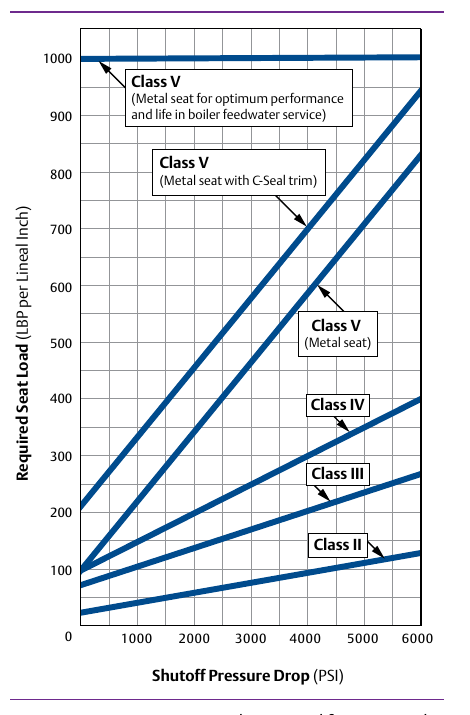

Two Independent Failures, One Spec

- 1Same inspection, second finding: commissioning also flagged a seat leak — the valve never achieved Class V shutoff, even before the trim erosion began
- 2Two separate, independent real failures from one spec: a trim-erosion problem and an entirely different shutoff-force problem
- 3Both trace back to real checks the flowchart lists that this spec did not run
Control Valve Handbook, 6th ed., Figure 5.3, p.124. Component Index: cvh-topic-seat-load, cvh-cmp-seat-load-graph.